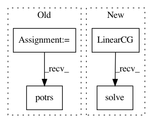

20c65469fe1e090f4d51322178655c7253b85e93,gpytorch/math/functions/invmm.py,Invmm,backward,#Invmm#Any#,15
Before Change
// input_2 gradient
if self.needs_input_grad[1]:
grad_input_2 = grad_output.potrs(chol_matrix)
return grad_input_1, grad_input_2
def __call__(self, input_1_var, input_2_var):
After Change
// input_2 gradient
if self.needs_input_grad[1]:
grad_input_2 = LinearCG().solve(matrix, grad_output)
return grad_input_1, grad_input_2
def __call__(self, input_1_var, input_2_var):
In pattern: SUPERPATTERN
Frequency: 3
Non-data size: 4
Instances
Project Name: cornellius-gp/gpytorch
Commit Name: 20c65469fe1e090f4d51322178655c7253b85e93
Time: 2017-07-18
Author: jrg365@cornell.edu
File Name: gpytorch/math/functions/invmm.py
Class Name: Invmm
Method Name: backward
Project Name: cornellius-gp/gpytorch
Commit Name: 20c65469fe1e090f4d51322178655c7253b85e93
Time: 2017-07-18
Author: jrg365@cornell.edu
File Name: gpytorch/math/functions/invmm.py
Class Name: Invmm
Method Name: forward
Project Name: cornellius-gp/gpytorch
Commit Name: 20c65469fe1e090f4d51322178655c7253b85e93
Time: 2017-07-18
Author: jrg365@cornell.edu
File Name: gpytorch/math/functions/exact_gp_marginal_log_likelihood.py
Class Name: ExactGPMarginalLogLikelihood
Method Name: forward